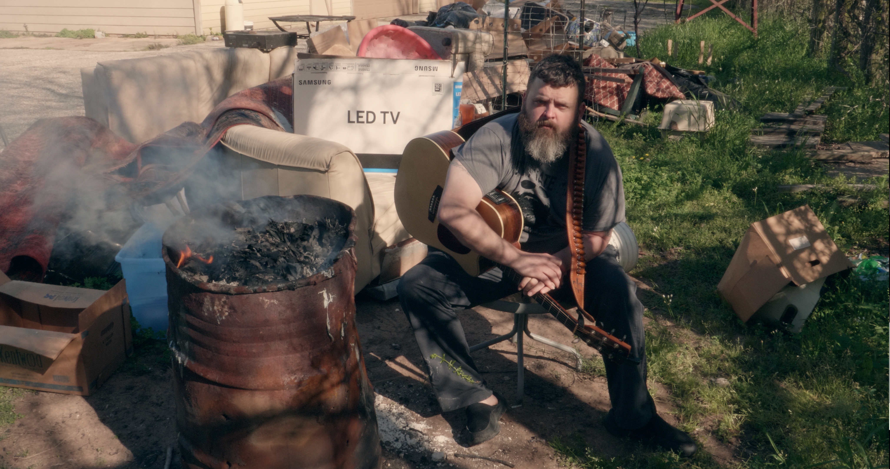
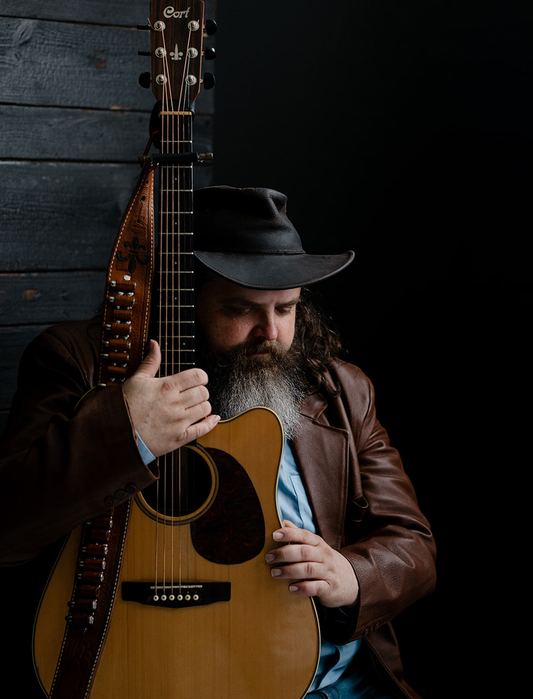
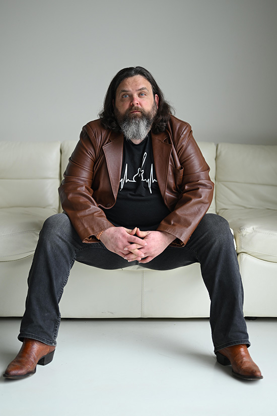
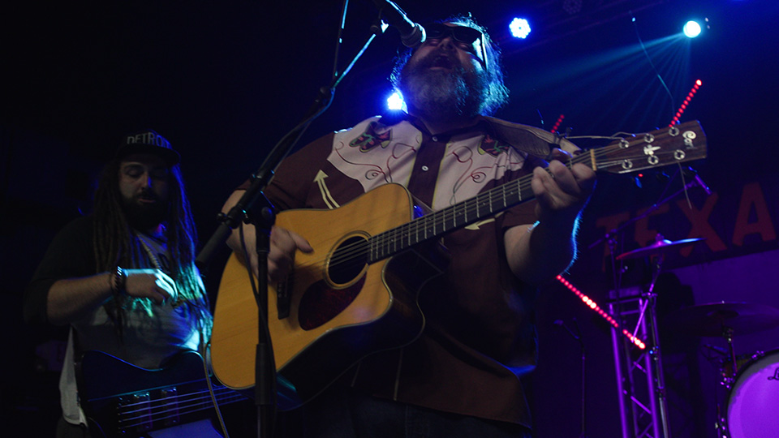
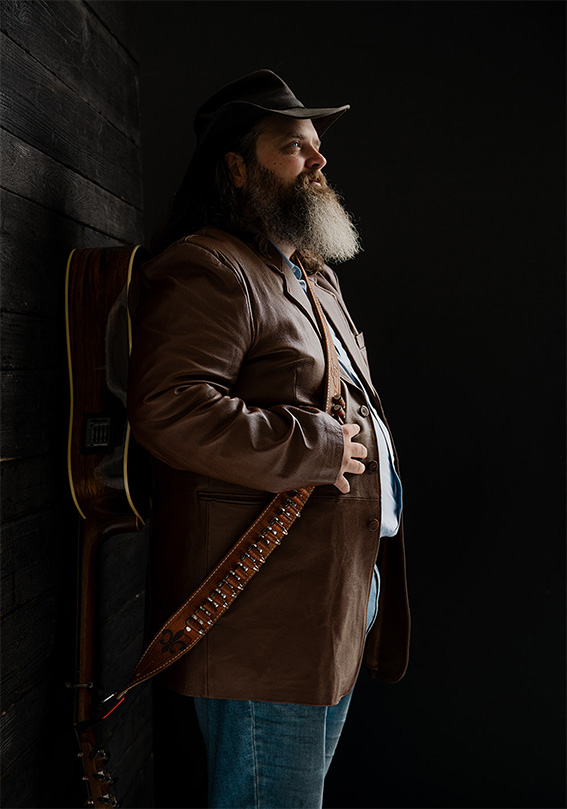

I was born in the Baton Rouge Police Department Headquarters (AKA Woman's Hospital), on July 3, 1979 at 3:33 am, and forged my path through shadows of loss, shades of truth, and FAFO grit. I grew up in Baton Rouge, attended 17 different middle schools due to my undiagnosed ADHD and my parents separate financial struggles.
1995
My teenage years unraveled amid turmoil, culminating in the tragic loss of my brother, Leigh Michael. Addiction and depression followed in 1996, living in the outskirts New Orleans running with the wrong people, leading to my juvenile nonviolent arrest and a pivotal 2 year, 3 week and 4 day stint in juvenile detention at JCCY.
While serving time there, during what the wardens called "Fun Day", Warden Lawrence Gorham had heard about my guitar skills and grabbed me and I was thwarted onstage to perform with the Angola Travelin’ Band. Who I have never met. Stage fright quickly ensued. I hadn't touched a guitar in over a year. The drummer of ATB (Sexual Chocolate) had been locked up for longer than I had been alive. Would he even know any songs I know? No time to think about it, so we jammed "Basket Case" by Green Day, and the inmates went wild. Re-Igniting my lifelong passion for music. Behind bars, I led worship sessions that honed my voice, gave me access to geetar and built spiritual depth. While working in the K-9 unit, I fostered a quiet resolve with my prison boss Captain Leo Brown (2 verse of How It Feels To Be A Cowboy); I also took correspondence courses from Southern University, laying groundwork for my future.
1999
Released from Jetson Correctional Facility, I channeled that fire into higher education, beginning at Southern University. In 2000, I transferred to Louisiana State University, initially majoring in Veterinary Medicine but switching to Information Systems & Decision Sciences due to ethical conflicts with Al Stevens leadership style; a self-taught web developer, I've built every band website I've been in, including lancewoolie.com.
2001
I was invited to visit Colombia, a journey that would reshape my life and sound. By 2004, I released a Christian crossover record No Important One “Let It Ride” (produced at Healing Place). I moved to Bogotá, settling into an apartment at Calle 49, Carrera Séptima #2, immersing myself in the vibrant local rhythms.
2005
Hurricane Katrina devastated New Orleans, displacing my mother and influencing my long-term stay in Bogotá; that year, I acted as "El Gringo" in the feature film El Colombian Dream. Filmed in Colombia and directed by Felipe Aljure. Amid personal milestones, then-Congressman Bobby Jindal wrote a letter to the State Department on my behalf to expedite my fiancée's visa so our child could be born on American soil—but the request was declined. Cause nobody like Bobby apparently.
2006
My daughter, Emma, was born in Ibagué, Colombia, as an American citizen born abroad—a profound anchor in my evolving world. From 2006 to 2023, returning stateside, I worked as a stone mason, machinist, blending technical precision with my creative drive; my path twisted through cultures and sounds.
I co-produced the album Hogleg Band - Country Paradise with local Legends Brian Brignac, Corban Barnes, Chris Roberts—a labor of love weaving scars and triumphs into raw, reflective songs. Between this record and the follow up record, I rebranded to my name given at birth, Lance Woolie. I have retained my dedication to excellence in production quality, strong songs, and the best players to deliver an album that rings true to today's listener while remaining timeless for generations to come.
We're almost 2 years in on production of this record "The Whole Two Dollars". We have released a couple singles from this album "Too Drunk" (with help of lyricist Jefferey Allen Imler) and Uber, both featuring Brent Mason. Brent has been a Godsend and a great friend and colleague on this album. His encouragement and enthusiasm to work on songs I wrote is a gift I never knew I wanted. Listening to records with Brent playing guitar for Zach Top, Post Malone, Alan Jackson, Garth Brooks, Toby Keith, George Strait, Shania Twain, and 1000's more re-confirms the decision to bring him on this project. Brent listens to the lyrics, then tracks guitar licks that support those lyrics. This is what I like to call "groove glue". Where each player on a record effect what the next player is tracking. Making a Nashville level authentic country or americana record is a long process and it takes a village of individuals dedicated to their craft. In the past, many of these session musicians received only hourly pay for the hit songs they performed on and zero after the songs became hits. Not on my records. Every player that makes it to the final mix gets 4% of the publishing royalties of that song. For example, on the song Country Paradise, Corban Barnes owns 50% of the writing for the co-write, an additional 8% for producer credit, 4% for guitars, and 4% for keys, for a total of 16% publishing + 50% writing. TBH, Corban has more publishing credits on the Country Paradise album than anyone else, even me. I ain't mad at all. Each musician that tracks on a record lays down a piece of themselves on tape, and they should share in the spoils, should the song become a hit. Corban Barnes is a musical monster, a freakin phenom. He performs regularly with my good buddy Kendal Schaffer and he tears up the stage every night. We're all just a big coonass family of artists that love to make great music.
I also must give an honorable mention to my lead guitarist Shane Reid who started playing live with Hogleg Band early on at the age of 17 and has continuously grown into the dynamic lead guitarist and most recently, a song writer for himself and a couple the heavy hitting rock songs on my new album. Keep an eye on Shane, he's 22 now and what a great friend he is. Another great friend of mine on this album is the Legendary Jonathon Boogie Long. We tracked a masterpiece edition of Jimi Hendrix little wing with Boogie, Brian Brignac and Chris Roberts. I won't be released until 2026 after Boogies new album has had a chance to shine like it deserves. Don't miss it!!
Today I am the Director of the Texas Country Music Network—a subsidiary of the Texas Country Music Association—I curate music videos for country artists for the TXCN Roku and Firestick apps, having reengineered the workflow to boost load speeds and overall audio/video quality. I do this at no cost to the TXCN or the TCMA. I am firm believer that rising water rases all ships. Support your fellow musicians. Encourage and enable them to grow and become what you know they are capable of. My best advice to all artists. "Groove is king".